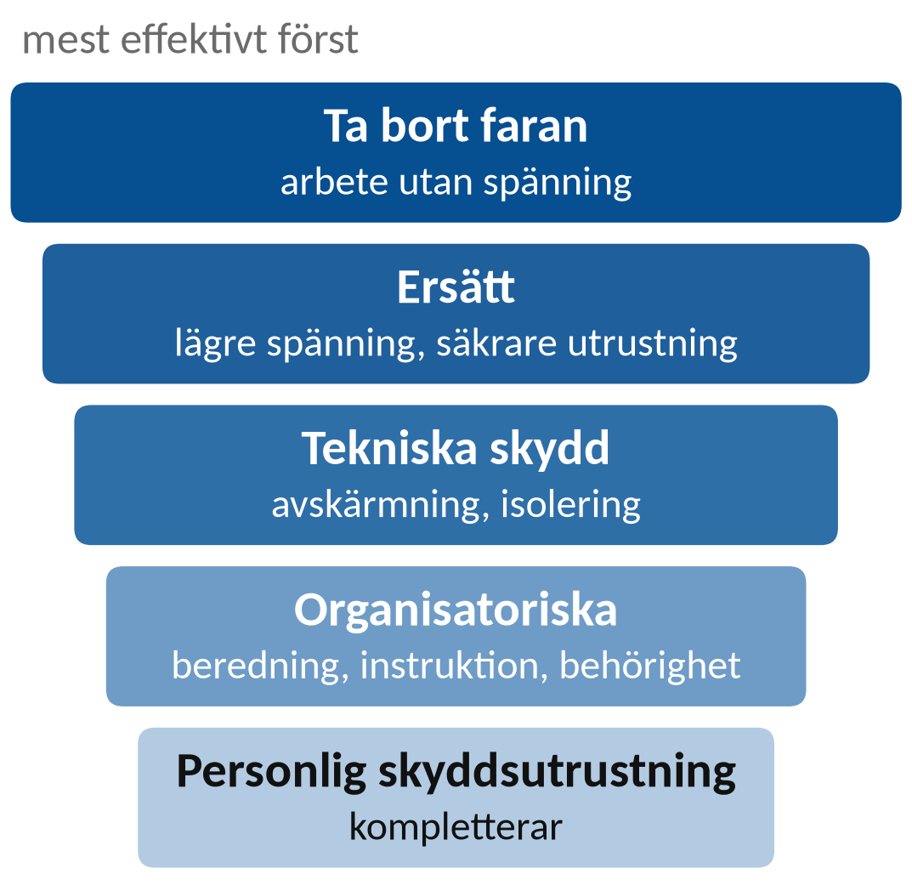
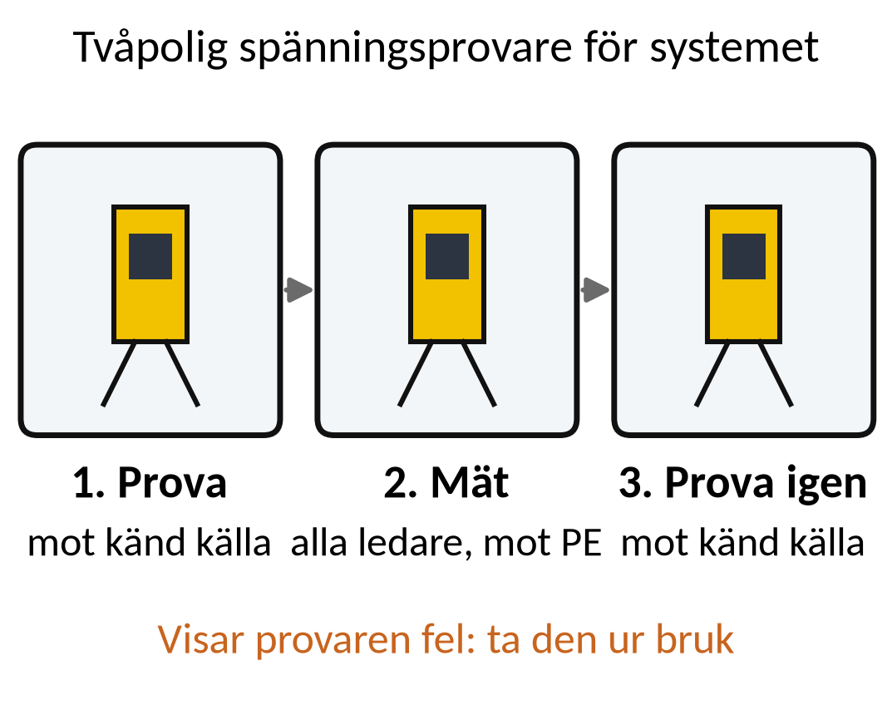
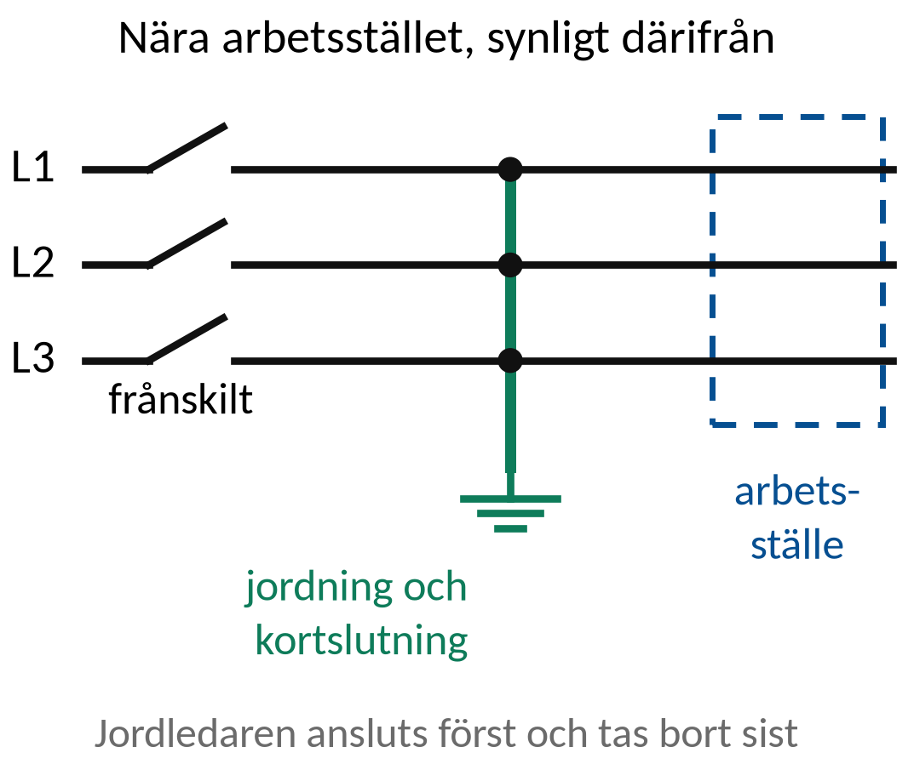
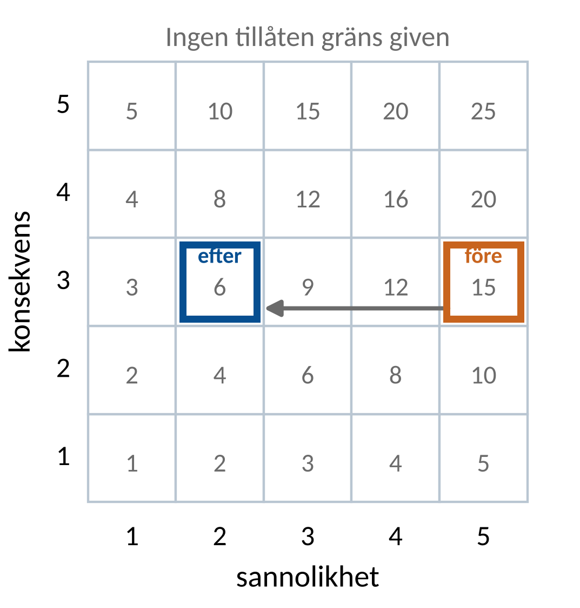

Vecka 42 · Del 3 av 3
Del 3: Riskbedömning och skydd
Vi pratar om: Från fara till beslut (avsnitt 1–3) och två exempel · Provare, jordning och stoppvillkor (avsnitt 4–6) och ett exempel
Öppna presentationenPresentationen som PDF
Läxor efter lektionen
Läs del 3. Tryck på ”Jag har läst del 3” längst ned på sidan.
Öppna del 3Gör övning 3.6–3.10 på delsidan. Ledtrådar och facit finns där.
Öppna övning 3.6Gör labben Välj CAT-klass i Multimeterlabbet.
Öppna labben
På lektionen: övning 3.1–3.5 gör vi tillsammans.
Hela veckan
- Veckans läxa: läs texterna
Senast torsdag 15 oktober Ladda ner texterna - Quiz
Senast torsdag 15 oktober - Inlämningen
Senast fredag 16 oktober
1 Översikt
Det här ska du kunna
- skriva en riskrad med fara, händelse, konsekvens och en åtgärd som går att verifiera.
- välja skydd i rätt ordning: minska faran först, skyddsutrustning sist.
- ange villkor för start, avbrott och återlämning.
Fundera först: Vad saknas i en riskbedömning som bara säger ”använd skyddshandskar”? Svaret finns i teorin nedan.
Så gör du
- Läs teorin ett avsnitt i taget (6 korta avsnitt). Sist i varje avsnitt står vilka övningar du kan göra direkt.
- Följ exemplen med papper och räknare, steg för steg. Gissa nästa steg innan du läser det.
- Gör övningarna 3.1–3.10. Fastnar du: Ledtråd 1 visar vilket samband du behöver och var i teorin det förklaras. Ledtråd 2 visar hur du börjar och Ledtråd 3 exemplet som räknar samma sorts uppgift med andra tal. Öppna facit när du har ett eget svar.
- Lämna in veckans uppgifter: Veckans inlämning.
Så skriver du en lösning som går att följa
1. Givet och sökt
Skriv av värden, enheter och vad du ska bestämma.
2. Samband och villkor
Välj formel eller princip. Kontrollera koppling, driftfall och antaganden.
3. Uträkning och kontroll
Omvandla enheter, sätt in värden och tolka resultatet.
I resonemangsfall: koppla observation till en motiverad slutsats.
Lärarens presentation · PDF · Räknarhjälp · Formelblad
Förkortningar och beteckningar i den här delen (4)
- CAT
- mätkategori (engelska: category). Anger vilken mätmiljö ett instrument är provat för: CAT II uttag, CAT III fast installation, CAT IV matningens början.
- SS-EN
- svensk och europeisk standard (SS: svensk standard, EN: europeisk standard). En europeisk standard som också gäller som svensk standard. Efter numret står utgåva och år.
- SEK
- SEK Svensk Elstandard. Organisationen som ger ut standarder för el i Sverige.
- UPS
- avbrottsfri kraftförsörjning (engelska: uninterruptible power supply). Ett aggregat med batteri som håller spänningen kvar när den vanliga matningen bryts. En UPS kan alltså ge spänning fast huvudmatningen är frånskild.
2 Teori
Ett avsnitt i taget: öppna det, läs, och gör sedan övningarna som står sist i avsnittet. Formeln bredvid rubriken är det viktigaste i avsnittet.
1Från identifierad fara till beslutFrån observation till startbeslut i fyra steg.
Från observation till startbeslut i fyra steg.
Observation: det vi vet om arbetsplatsen eller utrustningen.
Riskbedömning: möjliga händelser och konsekvenser.
Åtgärd: en ansvarig och ett sätt att verifiera effekten.
Startbeslut: villkoren för det avgränsade arbetet är uppfyllda.
Öva nu: Övning 3.8
2Arbetsmomentets gränserFara, händelse, konsekvens, åtgärd.
Fara, händelse, konsekvens, åtgärd.
Riskbedömningen börjar med en konkret uppgift och arbetsplats.
Ange vad som ingår och vad som ligger utanför uppdraget.
Exempel: en skadad kabel kan ge ett spänningsförande hölje.
Åtgärden behöver hindra både exponering och återanvändning.
Öva nu: Övning 3.1, Övning 3.2
3Prioritering av skyddSkyddsutrustning väljs mot den bedömda risken.
Skyddsutrustning väljs mot den bedömda risken.
Planeringen ska i första hand minska eller avlägsna faran.
Personlig skyddsutrustning kompletterar övriga åtgärder.
Vanliga arbetshandskar är inte automatiskt elektriskt isolerande.
Skydd mot ljusbåge behöver rätt klassning och användning.

Öva nu: Övning 3.3
4Provare, låsning och märkningInstrumentets funktion måste vara tillförlitlig.
Instrumentets funktion måste vara tillförlitlig.
En tvåpolig spänningsprovare väljs för systemets spänning och kategori.
Låsning och märkning stöder skyddet mot återinkoppling.
Kontrollmetod, instrumentkontroll och arbetsgräns står i den lokala arbetsinstruktionen.

Öva nu: Övning 3.4, Övning 3.5
5Jordning och kortslutningBehov och utförande styrs av anläggning och metod.
Behov och utförande styrs av anläggning och metod.
Åtgärden kan skydda mot oavsiktlig återspänningssättning och andra elektriska risker i arbetsområdet.
Högspänning kräver särskild utrustning, kompetens och plan.
Kursfallet är en dokumentationsövning utan verkligt handhavande.

Öva nu: Övning 3.6
6Kvarstående risk och stoppvillkorVillkor för start, avbrott och återlämning.
Villkor för start, avbrott och återlämning.
En åtgärd behöver en ansvarig person och en verifiering.
En osäker arbetsgräns eller ändrade förutsättningar kräver ett nytt beslut.
”Klart” ska betyda att de angivna kontrollerna är utförda.
Skriv hur avvikelser hanteras och kommuniceras.
Öva nu: Övning 3.7, Övning 3.9, Övning 3.10
3 Exempel
Följ exemplet steg för steg med papper och räknare. Försök själv med nästa steg innan du läser det. Övningarna använder samma metod med andra tal.
E1En användbar riskrad
Moment: undersöka den frånskilda kopplingslådan K4. En möjlig reservmatning är ännu inte identifierad.
Fara, händelse, konsekvens och verifierbar åtgärd.
- Fara: möjlig kvarvarande energitillförsel till K4.
- Händelse och följd: beröring kan ge strömgenomgång.
- Åtgärd: en utsedd ansvarig kartlägger matningen enligt aktuell plan.
Startvillkor: alla berörda källor och skyddsåtgärder är verifierade. Oklar matning ger stopp.
E2Exempel på riskrad
Moment: inspektion av en frånskild kopplingslåda i fuktig miljö.
Åtgärd: kartläggning, säkring och verifiering enligt plan.
- Fara: alternativ matning och skadad isolering.
- Ansvarig och kontrollresultat anges före startbesked.
Kvarstående osäkerhet om matningen innebär att arbetet väntar.
E3Riskpoäng med begränsning
En övningsmatris anger sannolikhet 5 och konsekvens 3. Efter åtgärd bedöms sannolikheten till 2.

Riskpoäng = sannolikhet · konsekvens
- Före: 5 · 3 = 15.
- Efter: 2 · 3 = 6.
Poängen sjunker i den här matrisen, men det säger inte hur mycket säkrare arbetet har blivit. Ingen tillåten gräns är given, så poängtalet visar inte att arbetet får starta.
4 Övningar
Räkna på papper. Bocka av en övning när du har kontrollerat ditt svar mot facit. Avbockningen sparas i den här webbläsaren.
Övning 3.1: Arbetsgräns
Uppgiften är att undersöka kopplingslådan K2. Underlaget säger bara ”i maskinrummet”. Vad behöver du veta mer exakt?
Givet: Arbetet gäller kopplingslådan K2 i maskinrummet. Inga anslutningar är angivna.
Ledtråd 1: vilken princip?
Utgå från Arbetsgränsen identifierar objekt och berörda delar. Läs Teori 2: Arbetsmomentets gränser.
Ledtråd 2: hur börjar jag?
Ett rum anger en plats, men inte vilka ledare, anslutningar och matningar som berörs. Ange vad som behöver klargöras: exakt vilken apparat, vilka delar som ingår, matningar och risker i närheten.
Ledtråd 3: steg för steg
1) Vilken apparat är det exakt, med beteckning? 2) Vilka ledare och plintar ingår i arbetet? 3) Varifrån matas den, och finns det mer än en matning? 4) Vad finns i närheten som kan vara spänningssatt? Skriv minst tre av dem.
Facit
Objektets beteckning, vilka ledare och plintar som ingår, alla matningsvägar och närliggande spänningssatta delar.
Övning 3.2: Fara och konsekvens
Formulera en fara och en möjlig konsekvens för en skadad kabel i en våt miljö.
Givet: En kabel med synlig skada i våt miljö. Ingen har kontrollerat om den är spänningssatt.
Ledtråd 1: vilken princip?
Utgå från Fara, möjlig händelse och konsekvens. Läs Teori 2: Arbetsmomentets gränser.
Ledtråd 2: hur börjar jag?
Fara är det som kan skada. Händelsen är det som kan inträffa. Konsekvensen är skadan som kan följa. Skriv kedjan fara → händelse → konsekvens. Skriv inte att kabeln är spänningssatt. Det vet du inte.
Ledtråd 3: steg för steg
1) Fara: vad kan skada? 2) Händelse: vad kan inträffa? 3) Konsekvens: vilken skada kan det bli? Skriv en kedja: fara → händelse → konsekvens. Annat fall: en oljefläck på durken → någon halkar → brutet ben.
Facit
Exempel: Fara: skadad isolation i våt miljö. Händelse: någon berör den skadade delen. Konsekvens: strömgenomgång.
Övning 3.3: Skyddsutrustning som enda åtgärd
Riskraden säger ”risk för elchock, använd handskar”. Varför räcker det inte?
Givet: Riskraden säger bara ”risk för elchock, använd handskar”. Det står inget om klassning, arbetsmetod eller ansvar.
Ledtråd 1: vilken princip?
Utgå från Skydd behöver väljas mot en konkret risk. Läs Teori 3: Prioritering av skydd.
Ledtråd 2: hur börjar jag?
Personlig skyddsutrustning är ett komplement till åtgärder som minskar faran. Förklara vad som saknas för att kunna bedöma om skyddet räcker. Vanliga arbetshandskar skyddar inte mot el.
Ledtråd 3: steg för steg
1) Vad gör handskar: minskar de faran eller skyddar de bara personen? 2) Står det vilken elektrisk klass handskarna ska ha? 3) Vad saknas om hur faran minskas, arbetsmetoden och ansvaret? Skriv två saker som raden borde ha med.
Facit
Den säger inte hur faran eller exponeringen minskas, vilken arbetsmetod som gäller eller vem som ansvarar. Handskarna har ingen angiven elektrisk klass.
Övning 3.4: Lås och skylt
Det sitter en skylt på en brytare, men inget hindrar att den slås till igen. Räcker skylten?
Givet: Planen säger att brytaren ska låsas. Den är inte låst. Det sitter bara en skylt.
Ledtråd 1: vilken princip?
Utgå från Märkning informerar, skydd mot återinkoppling ska fungera. Läs Teori 4: Provare, låsning och märkning.
Ledtråd 2: hur börjar jag?
En skylt visar ett budskap. Den hindrar inte automatiskt någon från att slå till. Jämför den faktiska åtgärden med planens skyddsfunktion och motivera beslutet.
Ledtråd 3: steg för steg
1) Vad gör en skylt, och vad gör ett lås? 2) Vad kräver planen: information eller att tillkoppling hindras? 3) Motivera beslutet med skillnaden mellan de två.
Facit
Nej. En skylt informerar men hindrar inte tillkoppling. Planen kräver ett fungerande skydd, till exempel lås.
Övning 3.5: Provare med skada
Spänningsprovarens kabel har synlig skada. Vad blir beslutet före kontrollen?
Givet: Skadan syns innan kontrollen har börjat. Ingen har bedömt att provaren kan användas.
Ledtråd 1: vilken princip?
Utgå från En skadad provare kan visa fel och ge dåligt skydd. Läs Teori 4: Provare, låsning och märkning.
Ledtråd 2: hur börjar jag?
Mätsladdarna och deras isolering är en del av provarens funktion och skydd. Ange hur provaren tas ur bruk och vad som krävs innan kontrollen kan göras.
Ledtråd 3: steg för steg
1) Kan en provare med skadad kabel lita på? Tänk på både mätresultatet och ditt eget skydd. 2) Vad gör du med provaren? 3) Vad behöver finnas innan kontrollen görs?
Facit
Provaren tas ur bruk och märks. Kontrollen görs inte förrän en hel och kontrollerad provare finns.
Övning 3.6: Jordningsutrustning
I en beredning för ett högspänningsarbete står det bara ”jorda”, utan objekt, utrustning eller ansvarig. Ange två saker som måste läggas till.
Givet: Högspänningsfallet är en övning i dokumentation. Inget får utföras i praktiken utifrån den här beskrivningen.
Ledtråd 1: vilken princip?
Utgå från Jordningsåtgärd kräver objekt, metod och ansvar. Läs Teori 5: Jordning och kortslutning.
Ledtråd 2: hur börjar jag?
Jordningsutrustningen måste vara dimensionerad för anläggningen och användas enligt den fastställda metoden. Ange minst två konkreta tillägg. Beskriv vad som ska kontrolleras – inte hur du själv skulle manövrera.
Ledtråd 3: steg för steg
1) Vad ska jordas, och på vilka punkter? 2) Vilken utrustning, och är den dimensionerad för anläggningen? 3) Vem ansvarar och vem kontrollerar? Välj två och skriv varför de behövs. Beskriv inte hur du själv skulle jorda.
Facit
Två av: vilket objekt och vilka punkter som ska jordas, vilken utrustning och dimensionering som gäller, och vem som ansvarar och verifierar.
Övning 3.7: Ändrade förutsättningar
Under arbetet upptäcker ni en UPS som inte finns med i beredningen. Vad ska hända med riskbedömningen?
Givet: En UPS som ingen kände till upptäcks under arbetet. Den finns inte med i beredningen.
Ledtråd 1: vilken princip?
Utgå från Ändrad matning kräver omprövad riskbedömning. Läs Teori 6: Kvarstående risk och stoppvillkor.
Ledtråd 2: hur börjar jag?
En UPS kan hålla delar spänningssatta eller ändra vad som behöver frånskiljas. Stoppa det berörda arbetet, ta reda på vad UPS:en matar och ange vad som krävs för ett nytt startbesked.
Ledtråd 3: steg för steg
1) Vad kan en UPS mata, även när huvudmatningen är bruten? 2) Vad gör ni med arbetet i det berörda området nu? 3) Vad måste läggas till i beredningen och i riskbedömningen innan ni får fortsätta?
Facit
Arbetet i berört område avbryts. UPS:en kartläggs och tas med i beredningen. Nytt startbesked ges först efter omprövad riskbedömning.
Övning 3.8: Riskpoäng
I en riskmatris är sannolikheten 3 och konsekvensen 4. Riskpoäng = sannolikhet · konsekvens. Efter en åtgärd är sannolikheten 1 och konsekvensen 4. a) Räkna poängen före och efter. b) Vad säger poängen inte?
Givet: Före: 3 och 4. Efter: 1 och 4. Det finns ingen gräns för vad som är godtagbart.
Ledtråd 1: vilken princip?
Utgå från Riskpoäng = sannolikhet · konsekvens. Läs Teori 1: Från identifierad fara till beslut.
Ledtråd 2: hur börjar jag?
Poängen gäller bara i den här matrisen. Siffrorna är uppskattningar och har ingen enhet. Räkna poängen före och efter och förklara varför en lägre poäng inte bevisar att kraven är uppfyllda.
Ledtråd 3: steg för steg
1) Räkna poängen: sannolikhet · konsekvens, före och efter. 2) Vilket av de två talen ändrades, och vilket är oförändrat? 3) Vad säger poängen inte om krav och kontroller? Annat fall: 2 · 5 före och 1 · 5 efter. Samma resonemang.
Facit
Före 3 · 4 = 12. Efter 1 · 4 = 4. Konsekvensen är oförändrad, och en lägre poäng visar inte att krav och kontroller är uppfyllda.
Övning 3.9: Kontroll av åtgärden
Riskraden säger ”kontrollera kabeln”. Skriv om den så att det framgår vem som ansvarar och vad resultatet ska bli.
Givet: Texten är ”kontrollera kabeln”. Kabeltyp och metod är inte angivna ännu.
Ledtråd 1: vilken princip?
Utgå från Åtgärd = vem, vad, hur och verifierat resultat. Läs Teori 6: Kvarstående risk och stoppvillkor.
Ledtråd 2: hur börjar jag?
För att en åtgärd ska kunna följas upp behövs objekt, ansvarig, kontrollmetod och ett redovisat resultat. Skriv om raden så att den säger vem, vad och när. Skriv också var resultatet ska stå. Instruktionen säger hur kontrollen görs.
Ledtråd 3: steg för steg
1) Vem gör kontrollen? 2) Vad kontrolleras, med vilken beteckning? 3) Enligt vilken instruktion? 4) Vart förs resultatet, och när? Mall: ”[Vem] kontrollerar [vad] enligt [instruktion] [när]. Resultatet förs in i [var].”
Facit
Exempel: ”[Namn] kontrollerar kabel [ID] enligt [instruktion] före start. Resultatet förs in i protokollet med datum.”
Övning 3.10: Samlad bedömning
En grupp har hittat två matningar men kan bara kontrollera den ena. Skyddsutrustning finns. Kan arbetet börja som arbete utan spänning?
Givet: Två matningar är kända, men bara den ena är kontrollerad. Arbetet planeras som arbete utan spänning.
Ledtråd 1: vilken princip?
Utgå från Start kräver verifierade förutsättningar för vald metod. Läs Teori 6: Kvarstående risk och stoppvillkor.
Ledtråd 2: hur börjar jag?
Arbete utan spänning kräver att alla matningar är brutna och kontrollerade. Hur många av matningarna är kontrollerade? Vad kan skyddsutrustning göra, och vad kan den inte göra?
Ledtråd 3: steg för steg
1) Vad kräver arbete utan spänning? 2) Är alla matningar kontrollerade? 3) Kan skyddsutrustning ersätta en kontroll av spänningslösheten? 4) Vad måste göras innan start?
Facit
Nej. Den andra matningen är inte verifierad, så spänningslösheten är inte säker. Skyddsutrustning ersätter inte det. Den andra matningen måste frånskiljas och verifieras först.
Klart med delen?
Vilken kontroll visar att din viktigaste skyddsåtgärd faktiskt fungerar?
Lämna riskbedömningen i inlämningen senast i dag, fredag 16 oktober. Ange arbetsgräns, faror, åtgärder, ansvar, kvarstående risk och kontrollerad regelhänvisning.
5 Labben
Labben kommer sist i veckan, när du har gått igenom del 1–3. Du använder samma metod som i övningarna: räkna först, läs av, jämför och förklara.
Veckans labbar Veckans inlämning
Källor och fortsatt läsning
Sjöskolan: vecka 42, del 3 Riskbedömning och skydd
Transportstyrelsen: Riktlinjer för riskanalysarbete, fartyg i nationell fart (2019)
Transportstyrelsen: elektrisk utrustning och elinstallationer på fartyg
SS-EN 50110-1 utgåva 4:2024, Skötsel av elektriska anläggningar (SEK Svensk Elstandard)
Har du läst hela del 3?
Knappen öppnas när du har läst hela sidan (minst 3 minuter).